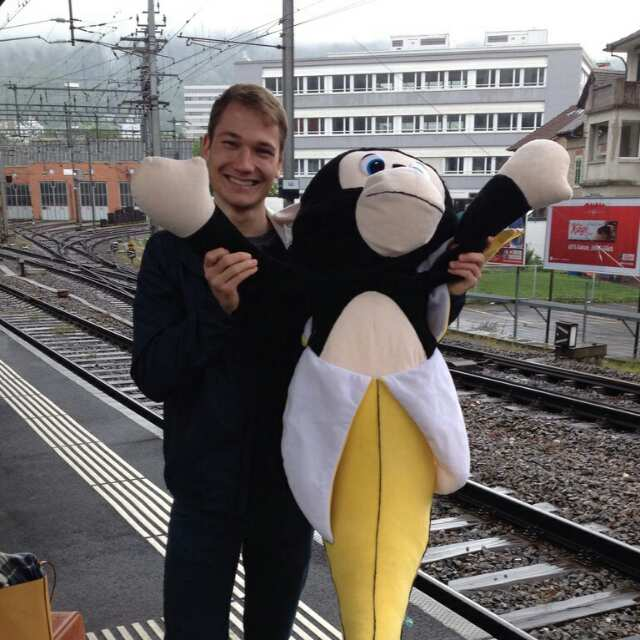

Ich, moi, me
Da Sie auf diese Seite gewechselt haben, wollen Sie sicherlich etwas über mich wissen und das sollen Sie auch bekommen.
Das bin ich:
Persönliche Daten
| Name | Manuel Hufmann |
| Geburtstag | 16 Dezember 1993 |
| Heimatort | St. Antoni FR |
| Wohnort | Wallisellen |
| Erlernter Beruf | Informatiker EFZ Systemtechnik |